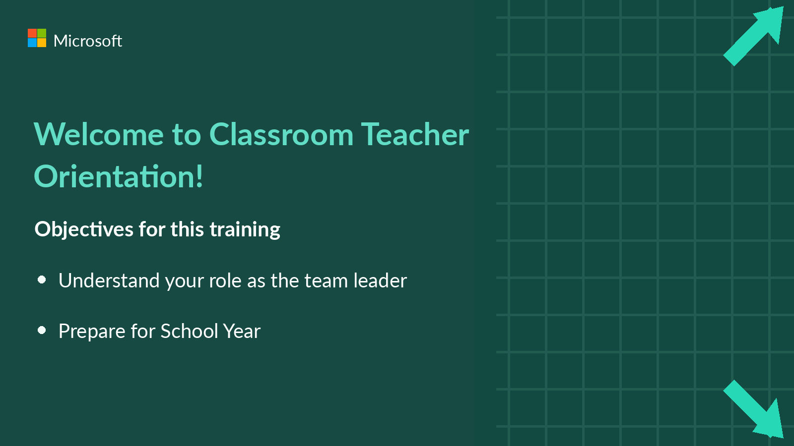
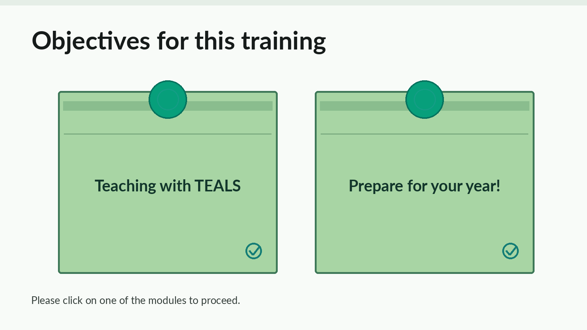

01 / The challenge
Turn onboarding into readiness.
New TEALS classroom teachers needed to lead a computer science classroom while coordinating volunteers, understanding support models, and completing time-sensitive preparation. Information alone was insufficient: the orientation needed to clarify expectations and translate them into actions teachers could take before the first day of school.
02 / The learning solution
Two focused modules. One clear path forward.
The documented design divided the orientation into Teaching with TEALS and Prepare for your year. The learner journey combined narrated explanations, layered content, clickable topics, reflection prompts, and downloadable preparation resources.
Build confidence by showing teachers what leadership looks like—and what to do next.
The storyboard specified module navigation, resource access, and completion-dependent controls; these decisions supported a self-paced journey without requiring an instructor present.
03 / The actual work
Clear views of the original learning design.
These high-resolution restored views were rebuilt from the original 2023 Storyline preview images, source photographs, and storyboard wording. Their text has been re-typeset for clarity; they are faithful visual reconstructions, not pixel-identical screenshots from a live LMS.




04 / Instructional decisions
Design the next action—not just the next slide.
- Put role clarity first. Support-model comparisons and role guidance made expectations explicit for teachers joining a technical team.
- Reveal complexity progressively. The storyboard describes layered and clickable information so learners can explore responsibilities without reading a wall of text.
- Connect content to real preparation. Downloadable checklists, classroom plans, schedules, and team-planning resources support follow-through beyond the course.
- Make space for reflection. Learners consider their motivations, support needs, and next steps instead of only consuming content.
- Plan for platform delivery. The recovered project demonstrates hands-on Storyline development; related TEALS artifacts also include SCORM output and manifests for LMS distribution.
05 / Evidence & measurement
What the artifacts prove.
The source file, storyboard, and 2023 summer-training design documentation establish the learning design, multimedia authoring, planned learner experience, objectives, and intended completion measures. Training completion and teacher readiness were identified as success measures in the program design.
Evidence boundary: Actual completion rates and post-training performance outcomes for this specific course have not been independently verified. This case study does not claim measured behavior change or outcomes that the archived materials cannot support.
06 / Attribution
Credits and reuse.
Original work: Microsoft TEALS and collaborators, Classroom Teacher Orientation (2023). Learning experience design and Storyline development contributions: Andrew Spiece. Selected visuals have been reconstructed at high resolution from source previews, original course imagery, and storyboard text, with layout adjustments to improve legibility. These restorations are labeled and do not represent a hosted course capture.
Shared under Creative Commons Attribution 4.0 International (CC BY 4.0), based on the confirmed sharing permission. Third-party marks, imagery, and materials may carry separate rights. This is an independent portfolio presentation and does not imply Microsoft endorsement.
Looking for thoughtful, practical learning design?
Let's talk about creating learning experiences that help people perform with confidence.
Contact Andrew ↗